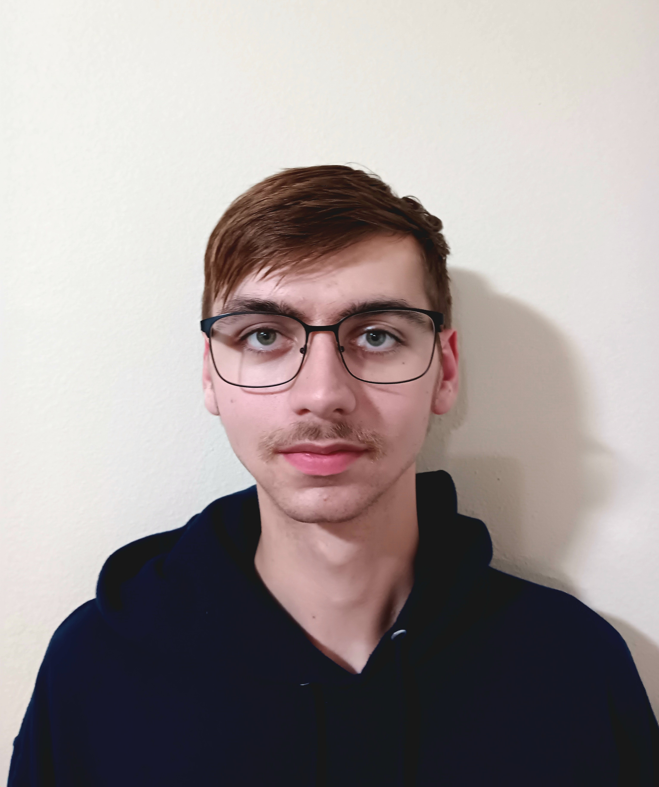

Benjamin Tanner

About Me:
My name is Benjamin Tanner and I am a student at Brigham Young University-Idaho. I am studying Computer Science and I am excited to learn more about the field. I am from Nampa, Idaho and I am the youngest of 3 children. I enjoy playing video games, the coast, and spending time with my family. I am excited to learn more about web design and development and excited about what it can do for me.
While my degree is computer science my long term goal is video game design and I hope that I can achieve that with BYU-I.